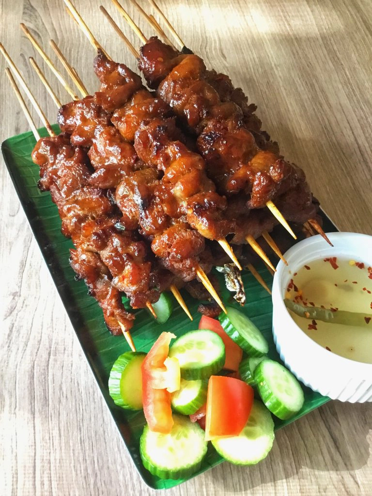

Barbecue Recipes
Home

Barbecue is a cooking method where meat is slow-cooked over a fire or hot coals, often seasoned with a flavorful marinade or sauce.
A barbecue recipe typically involves marinating meat, such as ribs, chicken, or brisket, with a blend of spices, herbs, and sauces. The meat is then cooked slowly over indirect heat on a grill or smoker, allowing the flavors to develop and the meat to become tender. The result is a smoky, savory dish with a crispy exterior and juicy, flavorful interior.
Ingredients:
- 1 cup ketchup
- 1/4 cup apple cider vinegar
- 1/4 cup brown sugar
- 2 tbsp Worcestershire sauce
- 1 tbsp soy sauce
- 1/2 tsp black pepper
- 4 chicken breasts, thighs, or drumsticks, or 2 racks of ribs
- Olive oil or vegetable oil for brushing
- salt